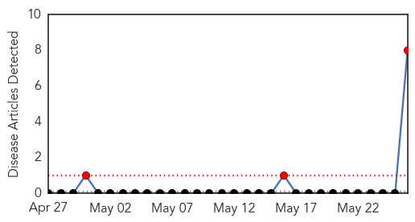

30 Day Trends
Web: 3 alerts, 0 warnings
Twitter: 0 alerts, 0 warnings
Top Articles:
- 0.996
- Man from Essex County was Lassa Fever victim, officials say
- 0.993
- Lassa Fever Death Confirmed in N.J. Man
- 0.992
- Search is on after man dies of rare fever
- 0.992
- Search is on after man dies of rare Lassa fever
- 0.988
- New Jersey traveler dies from Lassa fever
- 0.974
- New Jersey man dies of Lassa fever after Liberia trip
- 0.963
- CDC steps in after New Jersey man dies of rare viral disease
- 0.963
- CDC steps in after New Jersey man dies of rare viral disease Lassa
Top Tweets:
-
No tweets found for May 26, 2015
Web/News Articles
Tweets